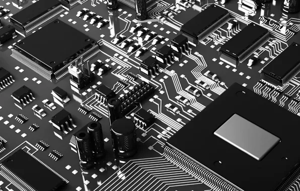
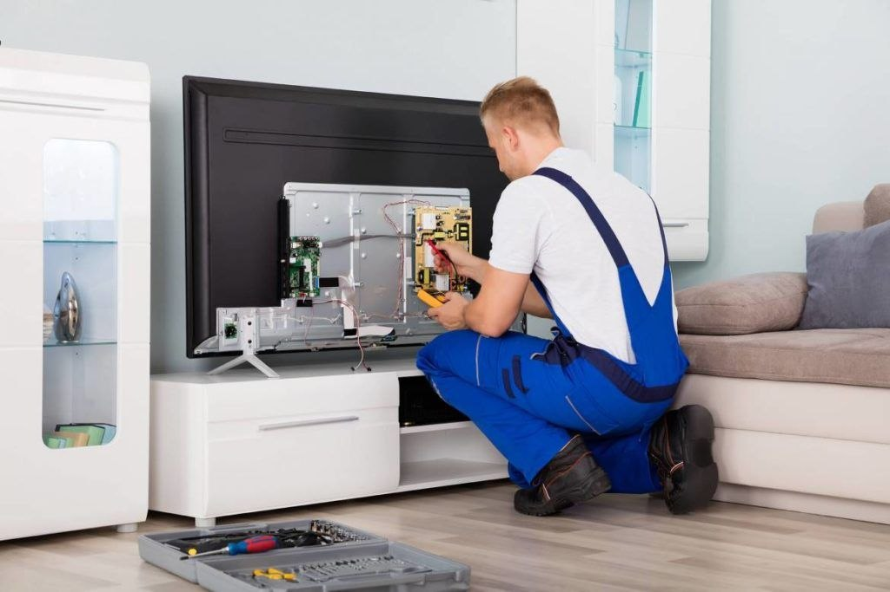
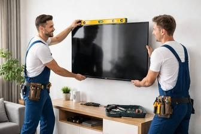
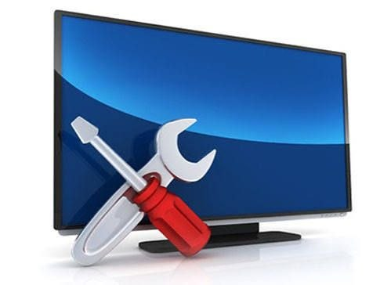

Ремонт телевизоров в Бишкеке
Выполним диагностику ТВ на дому и в сервисном центре в день обращения
- Выезд мастера и диагностика бесплатно!
- Гарантийный ремонт телевизоров

Выполним диагностику ТВ на дому и в сервисном центре в день обращения

Официальный сервисный центр ведущих производителей

Бережно доставим ваш телевизор в ремонт и обратно на дом или в офис

На все услуги мы даем гарантию до 12 месяцев или вернём деньги
Прямой доступ к складам производителей позволяет нам использовать оригинальные запчасти для ремонта телевизоров и сберегать ваше время и деньги. Срок поставки всего от 3 дней — без посредников.
Для вашего удобства осуществляем ремонт телевизоров с выездом на дом: оставьте заявку на сайте или позвоните по номеру +996 506 707 807.


Бесплатно
от 500 сом
от 1000 сом
от 500 сом
от 1000 сом
от 500 сом
от 500 сом
от 500 сом
Сервисный центр по починке телевизоров — ваш надежный партнер для решения всех проблем с вашим телевизором.
Опытные специалисты гарантируют качественный ремонт вашего телевизора.
Наши мастера могут приехать к вам домой для быстрой и точной проверки.
 Ремонт LED-телевизоров
Ремонт LED-телевизоров Ремонт ЖК-телевизоров (LCD)
Ремонт ЖК-телевизоров (LCD) Ремонт плазменных телевизоров
Ремонт плазменных телевизоров Ремонт QLED телевизоров
Ремонт QLED телевизоров Ремонт OLED телевизоров
Ремонт OLED телевизоровВот самые популярные среди них
Звоните, пишите в мессенджеры или оставляйте заявку. Мастер приедет в удобное для вас время.
☎ +996 506 707 807◷ Без выходных: с 08:00 до 20:00⌖ Бишкек, выезд по городу